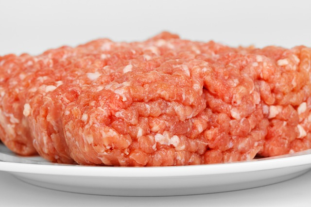
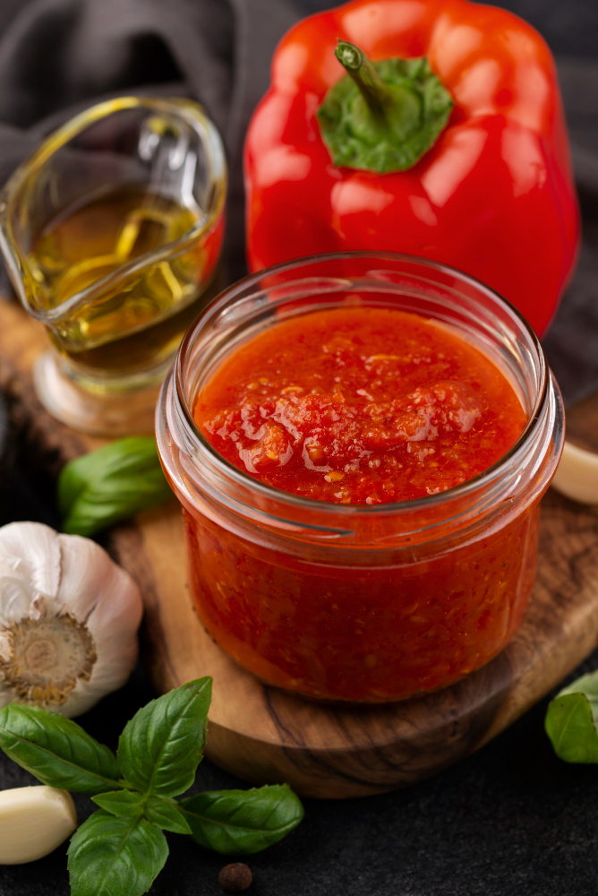
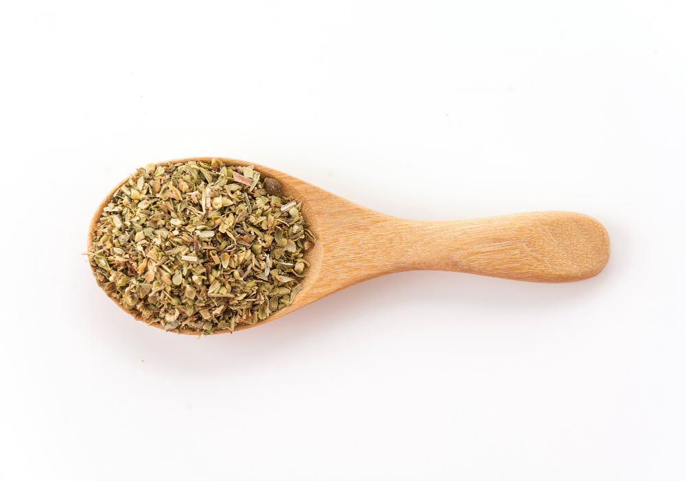

Geri Dön
Spagetti Tarifi
Malzemeler
-
400 gram spagetti makarna

-
300 gram kıyma

-
1 adet büyük boy soğan

-
2 adet domates veya 1 kutu domates püresi

-
1 yemek kaşığı domates salçası

-
1 çay bardağı zeytinyağı

-
1 çay kaşığı tuz

-
1 çay kaşığı karabiber

-
1 çay kaşığı kekik

-
1 çay kaşığı pul biber (isteğe bağlı)

-
Kaşar peyniri (üzeri için)

Adımlar
-
Makarnayı Haşlayın
- Büyük bir tencereye su ekleyin, kaynatın ve suya tuz ekleyin.
- Spagettiyi kaynar suya atın ve paketin üzerindeki süreye göre haşlayın.
- Haşlandıktan sonra süzün ve bir kenara alın.
-
Sosu Hazırlayın
- Soğanı ve sarımsağı ince ince doğrayın.
- Bir tavada zeytinyağını ısıtın, soğan ve sarımsağı ekleyin. Pembeleşene kadar kavurun.
- Kıymayı ekleyin ve kıyma tamamen pişene kadar kavurmaya devam edin.
- Domates salçasını ekleyip birkaç dakika daha kavurun.
- Domatesleri küçük küpler halinde doğrayıp ekleyin ya da domates püresini ilave edin.
- Tuz, karabiber, kekik ve isteğe bağlı pul biber ekleyin.
- Sosu kısık ateşte, domatesler suyunu çekene kadar pişirin (yaklaşık 10-15 dakika).
-
Makarna ile Sosu Birleştirin
- Haşlanmış spagettiyi sosun üzerine ekleyin ve iyice karıştırın.
- Spagetti, sosla tamamen kaplanana kadar birkaç dakika daha pişirin.
-
Servis
- Spagetti Bolognese’i tabaklara servis edin.
- Üzerine rendelenmiş kaşar peyniri serpebilirsiniz.